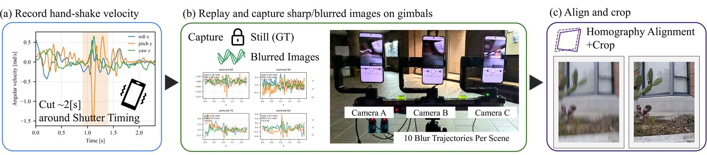
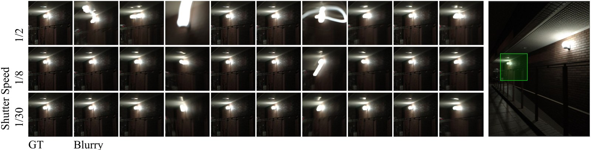
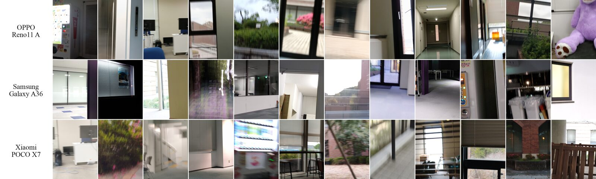

We introduce GimbalBlur, a large-scale benchmark dataset for smartphone image deblurring in the wild. Existing benchmarks force a choice between realism and controllability: synthetic datasets offer perfect alignment but lack authentic ISP characteristics, while real-world dual-camera datasets capture genuine blur but introduce sensor mismatches and irreproducible conditions. GimbalBlur resolves this tradeoff by replaying gyroscope-recorded hand-shake trajectories on three-axis gimbals in real 3D scenes. A stop-and-go strategy captures blurred and sharp pairs from the identical sensor and ISP pipeline, eliminating the exposure and noise discrepancies inherent in dual-camera systems. Three synchronized gimbals carrying different smartphones enable the first controlled cross-device comparison under identical blur conditions. The dataset comprises 200 scenes captured with three smartphone models at three shutter speeds, yielding 17,499 valid blurred and sharp pairs with synchronized IMU recordings above 400 Hz. Experiments with fourteen deblurring methods show that (1) models trained on synthetic data rarely improve over the blurry input on real smartphone images, (2) fine-tuning on GimbalBlur improves in-domain PSNR by up to 1.60 dB and also raises RealBlur-J PSNR, (3) an IMU-aided method trained on other data does not transfer to GimbalBlur without adaptation, and (4) device-specific imaging pipelines cause performance gaps exceeding 2 dB under identical blur. The dataset and capture system are publicly available.



Full-resolution data without alignment and cropping is also available at GimbalBlur-Fullres.
@inproceedings{gimbalblur,
author = {Muragishi, Akio and Okuda, Masahiro},
title = {{GimbalBlur}: {IMU}-Paired Multi-Device Deblurring Benchmark in the Wild},
booktitle = {Proceedings of the IEEE/CVF Winter Conference on Applications of Computer Vision (WACV)},
year = {2027},
}